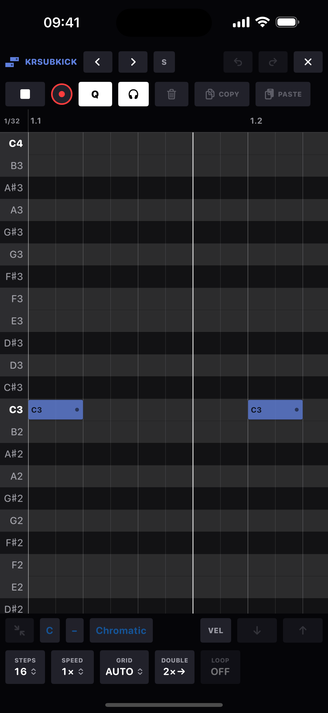

Piano roll
A full-screen note editor over the same trigs the step grid edits - nothing is duplicated. A "note" here is one chord voice of a trig: the trig owns the step position, and every voice can carry its own gate and nudge.
Open it from the roll button in the step grid's clipboard row. The header carries the track name with ◀ ▶ to step to the previous or next track (wrapping 16 → 1), an S solo (the mixer's solo), its own undo/redo, and ✕ to close. The transport row underneath has play, record, Q, the headphones toggle, trash, COPY and PASTE. Along the bottom, the edit bar and a row of captioned faces: STEPS (track length), SPEED (pattern speed), GRID, DOUBLE (the grid's 2×→) and LOOP.
Every note wears its name (C3, F♯4) on the note itself when there's room clear of the gate handle: dark ink on loud notes, light on quiet ones. The grid and ruler count musical time: on a 2× track a step is a 1/32 and a bar is 32 steps, and the readout in the corner where the ruler meets the pitch gutter says so.

Gestures
| Gesture | Result |
|---|---|
| Tap empty square | Parks the paste cursor there. |
| Tap the same square again | Adds a note at that snapped position. |
| Hold 0.3 s on a note (no movement needed) | Opens the ratchet menu: OFF or a rate from 1/16 to 1/64T, plus a RAMP - the run fades UP, holds FLAT, or fades DOWN across the burst. The rate plays until the gate ends - stretch the note for a longer roll - and the divider lines redraw live as you pick. Per-trig, like the hardware: a chord's voices ratchet together. A trig can't hold the same pitch twice - sub-hits ARE ratchets. |
| Tap a note | Selects it and latches its step - the TRG panel, p-locks and hardware mappings all target it. Auditions if headphones are on. |
| Tap a selected note | Deselects it (deleting lives on the trash chip). |
| Tap the pitch gutter | Selects every note on that row - and plays the pitch, notes or not: the gutter doubles as a keyboard. |
| Hold 0.3 s on empty space, drag | Marquee select (cyan dashes); the selection latches and auditions on release. |
| Drag a note | Moves it. Grabbing a member of a selection moves the whole group together. |
| Drag a note's right edge | Stretches the gate, snapped to the grid; a group stretches by the same delta. |
| Drag empty space | Pans. Pinch over the grid zooms time (anchored under your fingers). |
| Pinch in the pitch gutter | Zooms the row height, 14 to 60 points, holding the pitch under your fingers still. Note names scale with the rows. |
| Drag along the ruler | Braces a loop region (below). Drag a bracket to move that end alone; drag between the brackets to slide the whole region. |
Loop braces
A drag along the ruler draws a pair of brackets - a section loop, in musical time, so every other track replays the same bars. Amber while the loop is on, at half strength until the bar line lands; grey while it is off. The braces stay put when you switch the loop off, so switching it back on needs no redraw. Each bracket moves on its own; the span between them slides the region whole; everything snaps to the current grid.
- LOOP reads ON or OFF and toggles the loop over the braced span. With nothing braced yet, a tap braces the selected notes; a long press re-braces the selection at any time.
- A fresh brace switches the loop on; adjusting existing braces keeps the loop's on/off state.
- Outside the region the grid dims while the loop is on.
The velocity lane
Tap VEL in the bottom bar and a lane opens under the grid - one stem per trig, on the same timeline (it pans and zooms with the grid). Notes also wear their velocity in the grid itself: loud hits draw solid, quiet ones translucent, and ghosts draw hollow with a dashed edge.
- Drag a stem up or down to set that trig's velocity; the value reads out in the lane's gutter.
- Sweep across to paint a curve over many trigs in one gesture - crescendos in a single pass.
- With a selection, only selected stems respond, and dragging any one of them moves the whole selection together, preserving the relative dynamics between notes.
- Drag to the floor for a GHOST (velocity 0): silent until the live velocity offset lifts it. Ghost stems draw as hollow nubs on the baseline.
- Velocity is per note: a chord's voices stack their stems on the same tick, and the handle nearest your finger is the one you grab - quiet inner voices under a loud top note. A voice without its own value rides the trig's, which rides the track default. Painting a sweep writes every voice it crosses.
- Lane edits ride the roll's own UNDO.
Grid, snap and the Q button
- GRID on AUTO gets finer as you zoom: 1/16 → 1/32 → 1/64. Or pin a division: 1/8, 1/16, 1/32, 1/64, or the triplets 1/8T, 1/16T and 1/32T. The corner readout shows the division in musical time.
- SPEED changes the pattern's speed for this track from the roll; the grid, ruler and readout follow.
- Q governs single-note drops: lit, they snap to the grid; unlit, notes land exactly where your finger leaves them, the offset written as the note's nudge. Group drags never snap - a selection keeps its internal feel and lands exactly where you drop it, regardless of Q.
Chords and the no-overlap rule
- Notes on the same step stack into a chord - up to 6 voices per trig. Each voice can have its own gate and nudge; voice 1's values are the step's own.
- Same-pitch notes never overlap: a moved, pasted or stretched note takes its lane: any same-pitch note whose span it touches is deleted. Group members never eat each other.
- Moving a fully-selected trig carries everything it owns - locks, velocity, condition, per-voice offsets. Dragging just one voice out of a chord takes only that voice; landing on an occupied step joins its chord.
Selection tools
- Undo / redo: the roll keeps its own stack (64 snapshots), completely separate from the app's. DONE hands you back with the app stack untouched.
- COPY / PASTE: the app-wide step clipboard, so notes round-trip with the step grid. Paste lands at the cursor if one is parked - in pitch as well as time: the copied notes transpose so their lowest lands on the cursor's row - otherwise just after the selection. Pasting onto occupied steps merges: new pitches join the chord up to the six-voice limit, matching pitches take the pasted gate and velocity, nothing already there is lost. The pasted notes come back selected, ready to drag as a group.
- Trash: deletes the whole selection as one undoable event.
- Headphones: audition on selection: selected or added notes play through the track's own voice at their velocities (never recorded). Persisted per device.
Range and naming
Rows run C-2 up to C8, with middle C named C3. C rows are bold, row stripes mark the keyboard, and out-of-scale rows dim when the pattern has a scale. The ruler counts bar.beat; everything past the loop end is darkened. Amber dots on notes mark trigs carrying p-locks.